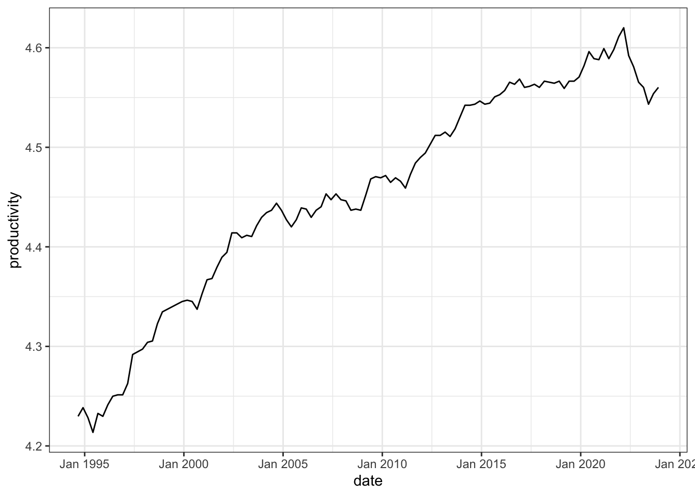
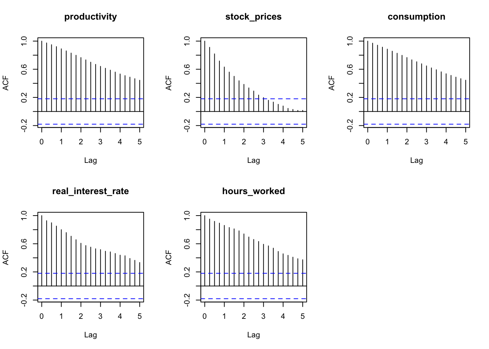
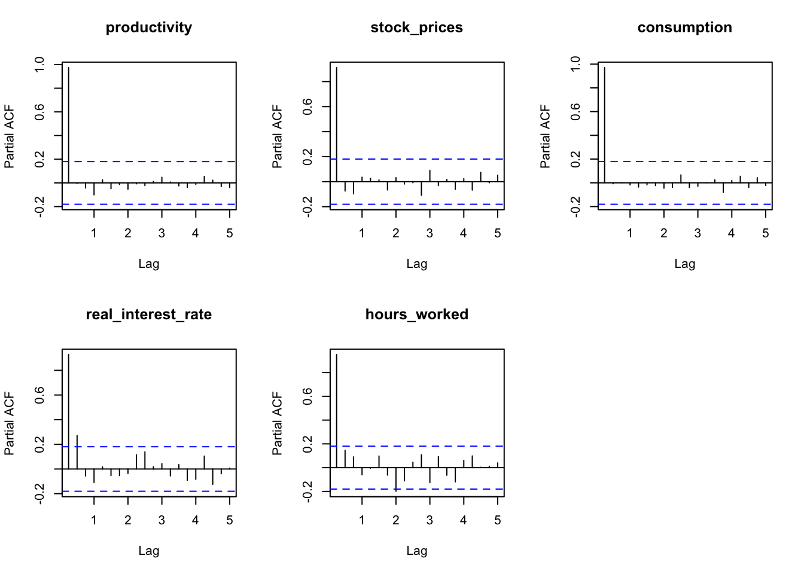

| date | productivity | stock_prices | consumption | real_interest_rate | hours_worked |
|---|---|---|---|---|---|
| Sep 1994 | 4.2297 | 3.4527 | 4.9278 | 4.842 | 6.0222 |
| Dec 1994 | 4.2384 | 3.3870 | 4.9191 | 5.961 | 6.0143 |
| Mar 1995 | 4.2283 | 3.3764 | 4.9315 | 5.892 | 6.0171 |
| Jun 1995 | 4.2136 | 3.4216 | 4.9487 | 6.209 | 6.0220 |
| Sep 1995 | 4.2327 | 3.4635 | 4.9500 | 6.293 | 6.0199 |
| Dec 1995 | 4.2297 | 3.4968 | 4.9610 | 6.708 | 6.0164 |
Sign and zero restrictions: optimism shock on the Australian business cycle
Abstract. This article investigates the effects of optimism shocks on the Australian economy using a Bayesian Structural Vector Autoregression (BSVAR) model. We implement the sign and zero restrictions algorithm proposed by Arias, Rubio-Ramı́rez, and Waggoner (2018) to identify the optimism shock. Impulse response functions (IRF) and forecast error variance decomposition (FEVD) are used to analyse the effects of the optimism shock on five key macroeconomic variables: productivity, stock prices, consumption, real interest rate and hours worked.
Keywords. Bayesian Structural VAR, sign restrictions, zero restrictions, optimism shock
Introduction
Objective: The goal of this research project is to implement the sign and zero restrictions algorithm proposed by Arias, Rubio-Ramı́rez, and Waggoner (2018) in the bsvarSIGNs package, and apply it to analyse the optimism shock in Australia economy.
Question: Does optimism shocks drive the business cycles in Australian economy?
Motivation: In macroeconomics, there has been a longstanding belief that fluctuations in business cycles can be largely attributed to episodes of optimism and pessimism. An optimism shock is defined as a positive shock to stock prices that does not affect productivity. Using a penalty function approach (PFA)1, Beaudry, Nam, and Wang (2011) finds significant evidence that optimism shocks are a key driver of business cycles in the United States as it creates a simultaneous boom in consumption and hours worked. But, Arias, Rubio-Ramı́rez, and Waggoner (2018) argue that PFA imposes additional restrictions, and they find less significant results using an importance sampler algorithm. This research project aims to extend the analysis to the Australian economy by implementing the importance sampler algorithm, and compare the results with United-States data.
Data
All data are collected from the Reserve Bank of Australia (RBA), the Australian Bureau of Statistics (ABS) and Yahoo Finance. Following Beaudry, Nam, and Wang (2011), we select the following five variables for our analysis
Productivity: non-farm labour productivity per hour (source: RBA, series ID GNFPROSQI).
Stock prices: end-of-period ASX 200 index (source: Yahoo Finance, ticker symbol ^AXJO), divided by the consumer price index.
Consumption: retail turnover (source: ABS, series ID A3348585R), divided by the consumer price index.
Real interest rate: over-night cash rate nets inflation (source: RBA, series ID FIRMMCRI and GCPIAGSAQP).
Hours worked: total hours worked (source: ABS, series ID A85389611R).
The first two variables (productivity and stock prices) are chosen to identify the optimism shock, the last three variables (consumption, real interest rate and hours worked) are chosen to capture the business cycle dynamics as in standard macroeconomic theory.
To capture multiplicative relationships in macroeconomic time series and percentage change interpretation, all variables are log transformed (except for real interest rate). A preview of first 6 rows of the concatenated dataset is shown below.
Time series plot

The sample period covers 1994Q3 to 2023Q4.
ACF and PACF plot

The autocorrelation function (ACF) plot shows all variables have a consistent pattern of autocorrelation, this suggests that the time series are non-stationary. Stationarity is formally tested using the Augmented Dickey-Fuller test in the next section.

The partial autocorrelation function (PACF) plot shows that the partial autocorrelation of all variables is significant at lag 1, real interest rate is also significant at lag 2. Therefore, choosing a lag length for the VAR model greater than or equal to 2 is reasonable, following convention for quarterly data, we will adopt a lag length of 4 for the VAR model.
Augmented Dickey-Fuller test
Level
All five variables are non-stationary at 5% significance level base on the Augmented Dickey-Fuller test.
| variable | p_value | non_stationary |
|---|---|---|
| productivity | 0.8372 | 1 |
| stock_prices | 0.1728 | 1 |
| consumption | 0.6170 | 1 |
| real_interest_rate | 0.3678 | 1 |
| hours_worked | 0.0657 | 1 |
First difference
Applying Augmented Dickey-Fuller test to the first difference of the variables, we find that all variables are stationary at 5% significance level. Therefore, all variables are integrated of order one \(I(1)\) and it is reasonable to put them in a VAR system without further transformation.
| variable | p_value | non_stationary |
|---|---|---|
| productivity | 0.01 | 0 |
| stock_prices | 0.01 | 0 |
| consumption | 0.01 | 0 |
| real_interest_rate | 0.01 | 0 |
| hours_worked | 0.01 | 0 |
Model
Specification
Adopting notations from Rubio-Ramirez, Waggoner, and Zha (2010), the SVAR model is specified as follows.
The endogenous variables are
\[ \mathbf{y}_t = [\text{productivity}_t,\ \text{stock prices}_t,\ \text{consumption}_t,\ \text{real interest rate}_t,\ \text{hours worked}_t]' \]
Structural form
\[ \begin{align*} \mathbf{y}_t' \mathbf{A}_0 &= \sum_{l=1}^{p} \mathbf{y}_{t-l}'\mathbf{A}_l + \mathbf{c} + \boldsymbol{\varepsilon}_t' \\ \boldsymbol{\varepsilon}_t | \mathbf{Y}_{t-1} &\overset{\text{iid}}{\sim} \mathcal{N}_N(\mathbf{0}, \mathbf{I}) \end{align*} \]
where \(\mathbf{y}_t\) is an \(N\times1\) vector of endogenous variables, \(\boldsymbol{\varepsilon}_t\) is an \(N\times1\) vector of exogenous structural shocks, \(\mathbf{A}_l\) is an \(N\times N\) matrix of parameters with \(\mathbf{A}_0\) invertible, \(\mathbf{c}\) is an \(1\times N\) vector of parameters, and \(p\) is the lag length, and \(T\) is the sample size. This can be compactly written as
\[ \begin{align*} \mathbf{y}_t' \mathbf{A}_0 &= \mathbf{x}_t' \mathbf{A}_+ + \boldsymbol{\varepsilon}_t' \end{align*} \]
where \(\mathbf{A}_+ = [\mathbf{A}_1'\ \cdots\ \mathbf{A}_p'\ \mathbf{c}']\) and \(\mathbf{x}_t = [\mathbf{y}_{t-1}'\ \cdots\ \mathbf{y}_{t-p}'\ 1]\). The dimension of \(\mathbf{A}_+\) is \(K\times N\) where \(K=Np+1\).
In matrix form,
\[ \begin{align*} \mathbf{Y} \mathbf{A}_0 &= \mathbf{X} \mathbf{A}_+ + \boldsymbol{\varepsilon}\\ \boldsymbol{\varepsilon}| \mathbf{X} &\sim \mathcal{MN}_{T\times N}(\mathbf{0}, \mathbf{I}_N, \mathbf{I}_T) \end{align*} \]
where \(\mathbf{Y} = [\mathbf{y}_1\ \cdots\ \mathbf{y}_T]'\), \(\mathbf{X} = [\mathbf{x}_1\ \cdots\ \mathbf{x}_T]'\), and \(\boldsymbol{\varepsilon}= [\boldsymbol{\varepsilon}_1\ \cdots\ \boldsymbol{\varepsilon}_T]'\).
The matrices \(\mathbf{A}_0\) and \(\mathbf{A}_+\) are structural parameters.
Reduced form
\[ \begin{align*} \mathbf{y}_t' &= \mathbf{x}_t' \mathbf{B} + \mathbf{u}_t' \\ \mathbf{u}_t | \mathbf{Y}_{t-1} &\overset{\text{iid}}{\sim} \mathcal{N}_N(\mathbf{0}, \mathbf{\Sigma}) \end{align*} \]
where \(\mathbf{B} = \mathbf{A}_ + \mathbf{A}_0^{-1},\ \mathbf{u}_t' = \boldsymbol{\varepsilon}_t' \mathbf{A}_0^{-1}\), and
\[ \mathbf{\Sigma }= \mathbb{E}[\mathbf{u}_t\mathbf{u}_t'] = (\mathbf{A}_0^{-1})' (\mathbf{A}_0^{-1}) = (\mathbf{A}_0 \mathbf{A}_0')^{-1} \]
In matrix form,
\[ \begin{align*} \mathbf{Y} &= \mathbf{X} \mathbf{B} + \mathbf{u} \\ \mathbf{u} | \mathbf{X} &\sim \mathcal{MN}_{T\times n}(\mathbf{0}, \mathbf{\Sigma}, \mathbf{I}_T) \end{align*} \]
where \(\mathbf{u} = [\mathbf{u}_1\ \cdots\ \mathbf{u}_T]'\).
The matrices \(\mathbf{B}\) and \(\mathbf{\Sigma}\) are reduced-form parameters.
Notation relations
In matrix form, notations from the lectures are
\[ \begin{align*} \mathbf{Y} &= \mathbf{X} A + E \\ \mathbf{Y} B_0' &= \mathbf{X} B_+' + U \\ E | \mathbf{X} &\sim \mathcal{MN}_{T\times N}(\mathbf{0}, \mathbf{\Sigma}, \mathbf{I}_T) \\ U | \mathbf{X} &\sim \mathcal{MN}_{T\times N}(\mathbf{0}, \mathbf{I}_N, \mathbf{I}_T) \\ \end{align*} \]
Their equivalence relation is summarized in the following table.
| Rubio-Ramirez, Waggoner, and Zha (2010) | Lecture |
|---|---|
| \(\mathbf{B}\) | \(A\) |
| \(\mathbf{\Sigma}\) | \(\mathbf{\Sigma}\) |
| \(\mathbf{A}_0\) | \(B_0'\) |
| \(\mathbf{A}_+\) | \(B_+'\) |
| \(\boldsymbol{\varepsilon}\) | \(U\) |
| \(\mathbf{u}\) | \(E\) |
(also \(B_0=B\) in Woźniak (2022))
In the following, we will use the first set of notations.
Orthogonal reduced-form parameterization
Since SVAR model are identified up to a rotation matrix \(\mathbf{Q}\), we can explicitly specified the reduced-form model as
\[ \mathbf{y}_t' = \mathbf{x}_t' \mathbf{B} + \boldsymbol{\varepsilon}_t' \mathbf{Q}' h(\mathbf{\Sigma}) \]
Where \(\mathbf{Q}'h(\mathbf{\Sigma}) = \mathbf{A}_0^{-1}\) or \(\mathbf{Q}=h(\mathbf{\Sigma}) \mathbf{A}_0\), and \(h\) is some differentiable decomposition, one specific choice is the upper triangular Cholesky decomposition.
Then, we can define a mapping \(f_h\) between the reduced-form parameters \((\mathbf{B}, \mathbf{\Sigma}, \mathbf{Q})\) and structural-form parameters \((\mathbf{A}_0, \mathbf{A}_+)\) as
\[ \begin{align*} f_h(\mathbf{A}_0, \mathbf{A}_+) &= ( \underbrace{\mathbf{A}_+ \mathbf{A}_0^{-1}}_\mathbf{B}, \underbrace{(\mathbf{A}_0 \mathbf{A}_0')^{-1}}_{\mathbf{\Sigma}}, \underbrace{h((\mathbf{A}_0 \mathbf{A}_0')^{-1}) \mathbf{A}_0}_\mathbf{Q} ) \\ f_h^{-1}(\mathbf{B}, \mathbf{\Sigma}, \mathbf{Q}) &= ( \underbrace{h(\mathbf{\Sigma})^{-1} \mathbf{Q}}_{\mathbf{A}_0}, \underbrace{\mathbf{B} h(\mathbf{\Sigma})^{-1} \mathbf{Q}}_{\mathbf{A}_+} ) ) \end{align*} \]
Algorithm
The goal is to sample structural parameters (\(\mathbf{A}_0\), \(\mathbf{A}_+\)) satisfying both the sign and zero restrictions, but the set of structural parameters satisfying the zero restrictions is of Lebesgue measure zero in the set of all structural parameters (\(\mathbb{P}(X=x)=0\) for continuous \(X\)). Luckily, we can sample the set of structural parameters satisfying the sign restrictions conditional on satisfying the zero restrictions.
Here is a high level outline of the algorithm:
- Sample reduced-form parameters (\(\mathbf{B}\), \(\mathbf{\Sigma}\), \(\mathbf{Q}\)) conditional on the zero restrictions.
- Set \((\mathbf{A}_0, \mathbf{A}_+) = f_h^{-1}(\mathbf{B}, \mathbf{\Sigma}, \mathbf{Q})\).
- If the sign restrictions are satisfied, keep \((\mathbf{A}_0, \mathbf{A}_+)\) and compute an importance weight, otherwise discard.
- Repeat steps 1-3 until the desired number of samples is obtained.
- Resample with replacement using the importance weights.
The importance sampling step 5 is needed to manipulate the density induced by step 1 to the desired conjugate posterior density.
Identification
After estimating the reduced-form VAR model, we plan to impose the following restrictions on the contemporaneous impulse response to identify optimism shock.
| Productivity | Stock prices | Consumption | Real interest rate | Hours worked |
|---|---|---|---|---|
| 0 | Positive | Unrestricted | Unrestricted | Unrestricted |
The identification strategy is based on the assumption that the optimism shock positively affects stock prices, and has no contemporaneous effect on productivity.
Interpretation
Two popular methods to interpret the SVAR model are impulse response function (IRF) and forecast error variance decomposition (FEVD) (Kilian and Lütkepohl 2017, Chap 4).
IRF
The impulse response function (IRF) of the SVAR model is used to interpret the effect of the optimism shock on the endogenous variables. Specifically, we are interested in whether a positive optimism shock leads to a simultaneous boom in consumption and hours worked (as in the United States).
Mathematically, the response of the \(i\)-th variable to the \(j\)-th shock at horizon \(k\) is given by the element at row \(i\) columns \(j\) of \(\mathbf{\Theta}_k\), where \(\mathbf{\Theta}_k\) is defined recursively as
\[\begin{aligned}&\mathbf{\Theta}_{0} = \left(\mathbf{A}_{0}^{-1}\right)^{\prime},\quad\mathbf{\Theta}_{h} = \sum_{l=1}^{h}\bigl(\mathbf{A}_{\ell}\mathbf{A}_{0}^{-1}\bigr)^{\prime}\mathbf{\Theta}_{h-\ell},\quad\mathrm{} 1 \leq h \leq p,\\&\mathbf{\Theta}_{h} = \sum_{\ell=1}^{p}\bigl(\mathbf{A}_{\ell}\mathbf{A}_{0}^{-1}\bigr)^{\prime}\mathbf{\Theta}_{h-\ell},\quad\mathrm{} p < h < \infty.\end{aligned}\]FEVD
The forecast error variance decomposition (FEVD) is used to quantify the relative importance of the optimism shock in explaining the variability of a \(h\)-step ahead forecast of a particular variable. For example, we will examine the proportion of the variability of consumption and hours worked explained by the optimism shock.
Mathematically, the \(i\)-th variable’s forecast error variance decomposition of the \(j\)-th shock at horizon \(k\) is given by
\[ \text{FEVD}_j^i(h) = \frac{\text{MSFE}_{j}^{i}(h)}{\sum_{n=1}^{N}\text{MSFE}_{j}^{n}(h)}, \quad \text{MSFE}_{j}^{i}(h) = \sum_{l=0}^{h-1} \mathbf{\Theta}_{ij,l} \]
References
Arias, Jonas E, Juan F Rubio-Ramı́rez, and Daniel F Waggoner. 2018. “Inference Based on Structural Vector Autoregressions Identified with Sign and Zero Restrictions: Theory and Applications.” Econometrica 86 (2): 685–720.
Beaudry, Paul, Deokwoo Nam, and Jian Wang. 2011. “Do Mood Swings Drive Business Cycles and Is It Rational?” National Bureau of Economic Research.
Kilian, Lutz, and Helmut Lütkepohl. 2017. Structural Vector Autoregressive Analysis. Cambridge University Press.
Rubio-Ramirez, Juan F, Daniel F Waggoner, and Tao Zha. 2010. “Structural Vector Autoregressions: Theory of Identification and Algorithms for Inference.” The Review of Economic Studies 77 (2): 665–96.
Woźniak, Tomasz. 2022. Bsvars: Bayesian Estimation of Structural Vector Autoregressive Models. R Package. https://cran.r-project.org/package=bsvars.
Footnotes
Intuitively, the PFA uses a loss function to find a rotation matrix \(\mathbf{Q}\) that satisfies the zero restrictions and satisfies or close to satisfying the sign restrictions, thus it is not an exact solution. In comparison, the importance sampler algorithm is an exact solution satisfying all the restrictions.↩︎